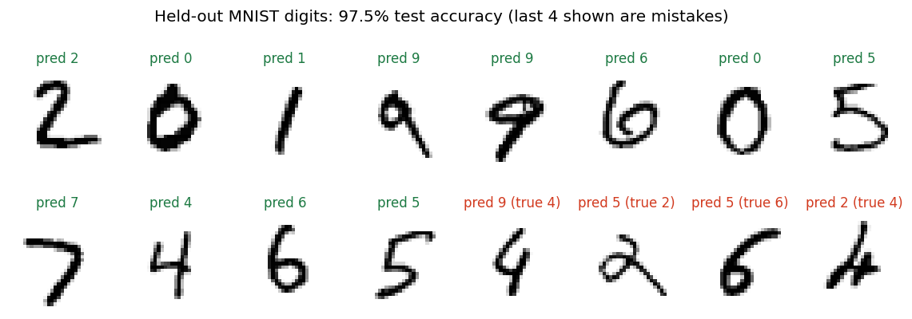
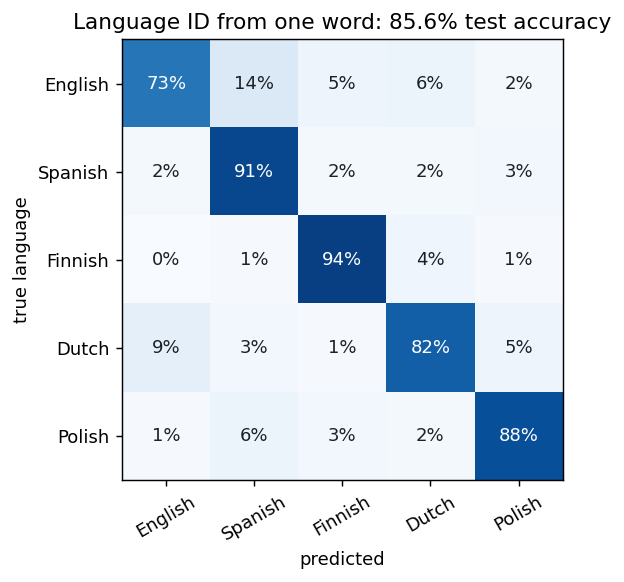

← Back to CS 188 Projects
Neural Networks
CS 188 | Project 5 | Summer 2026
Neural Networks
from Scratch.
A perceptron, a regression network, an MNIST digit classifier and a recurrent language identifier, all built on a minimal autodiff library rather than PyTorch. The digit classifier reaches 97.5% test accuracy and the RNN names a word’s language from five options 85.6% of the time.
Headline97.5% test accuracy on MNIST · 85.6% language ID from a single word · no deep learning framework
- Course
- CS 188, Introduction to Artificial Intelligence
- Project
- Project 5: Machine Learning
- Timeline
- Summer 2026, UC Berkeley
- Topics
- Perceptron, MLPs, SGD, recurrent networks
25/25autograder score
97.5%MNIST test accuracy with one hidden layer
85.6%language ID accuracy across 5 languages
0.019final mean squared error fitting sin(x)
Overview
Four learning problems of increasing difficulty: separate two classes with a line, fit a smooth curve, recognize handwritten digits, and guess which language a word comes from. Each model is built from primitive operations (matrix multiply, bias, ReLU, loss) on a small autodiff library, so every layer and training loop is written by hand.
Approach
- Perceptron. A linear classifier trained with mistake-driven updates: whenever it misclassifies a point, add or subtract that point from the weights, until a full pass has no mistakes.
- Regression. A network with one 200-unit ReLU hidden layer fit to sin(x) on [−2π, 2π] with squared loss and stochastic gradient descent, stopping once the loss drops below 0.02.
- Digit classification. A 784 → 200 → 10 network with ReLU and softmax cross-entropy loss, trained with SGD (learning rate 0.01) until validation accuracy passes 97.5%.
- Language identification. A recurrent network that reads a word one character at a time, updating a 200-unit hidden state with shared weights, then maps the final state to scores for English, Spanish, Finnish, Dutch and Polish. Sharing weights lets one model handle words of any length.
Hidden layer: h = ReLU(xW1 + b1), scores = hW2 + b2
RNN: hi = ReLU(xiWx + b + hi−1Wh) SGD: θ ← θ − η ∇θL
RNN: hi = ReLU(xiWx + b + hi−1Wh) SGD: θ ← θ − η ∇θL
xi is the one-hot vector for character i, Wh the shared hidden-to-hidden weights, η the learning rate, L the loss.
Results
| Model | Result |
|---|---|
| Perceptron | Converges to a separating line |
| Regression on sin(x) | Final mean squared error 0.019 (target < 0.02) |
| MNIST digit classifier | 97.5% test accuracy |
| Language ID (RNN) | 85.6% test accuracy; per language: Finnish 94%, Spanish 91%, Polish 88%, Dutch 82%, English 73% |


What I learned
- Frameworks hide a simple loop. Forward pass, loss, gradients, update: writing it by hand made it clear what PyTorch does under the hood.
- One hidden layer goes a long way. A single 200-unit ReLU layer was enough for 97.5% on handwritten digits.
- Weight sharing handles variable length. Reusing the same weights at every character is what lets an RNN read words of any length with a fixed number of parameters.
- Averages hide the spread. An 85.6% overall accuracy covers a range from 73% on English to 94% on Finnish, so the per-language breakdown says more than the single number.
Project framework and specifications are from the CS 188 course staff (the Berkeley Pacman AI projects). The implementation and write-up are my own; the code is kept private in line with course academic-integrity policy. Results come from re-running my finished code.